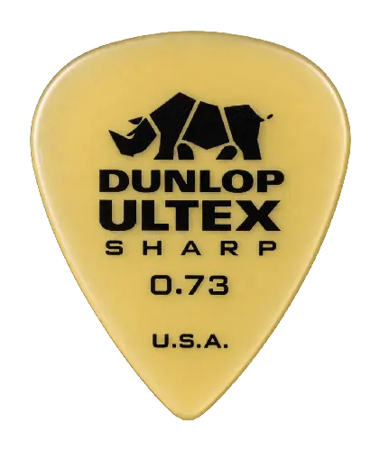

◆
PVZ（XDZ版）
LIVE AT THE BACKYARD

12
第 1 关 · 准备 10 秒
Ⅱ
当前选择
暂无
请先点击左侧植物卡片
TONIGHT ONLY
PVZ
（XDZ版）
选择关卡
1
2
3
4
5
开始第 1 关
5 关挑战 · 分波进攻
PAUSED
游戏暂停
切换关卡
1
2
3
4
5
点击关卡后将重新开始该关
继续游戏
ENCORE!
挑战成功
所有入侵者都被赶走了。
下一关
移动准星 · 点击任意位置发射 · ESC 取消